Scalaの次世代コンパイラ
DottyでWEBフレームワークを作ってみた
2017/08/01
iwamatsu0430
誰
Dottyって知ってます？？
これです、これ
何が変わるんですか？
Union Type
traitパラメータ
Enum構文
他にも色々…
使ってみたい…！
WEBアプリを作りたい(ギョームに還元したい)
👇
Playframework等が対応していない
👇
WEBフレームワークがない😇
じゃあ作ってみましょう💪
環境構築※
コンパイラのインストール
$ brew install lampepfl/brew/dotty
sbt 0.13.15~にて
$ sbt new lampepfl/dotty.g8
環境構築
簡単に作れました
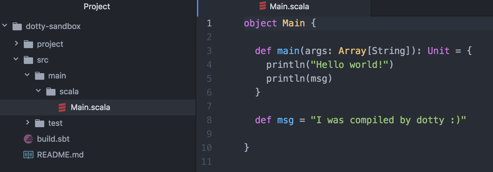実行
$ sbt run
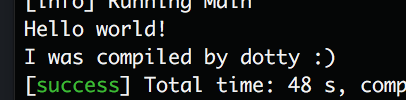
どんな感じで使える
フレームワークにするか…🤔
とりあえずこんなController
class UserController extends Controller {
@GET("/users")
def list() = action {
OK
}
@GET("/users/:id")
def detail(id: Long) = async {
Future.successful(OK)
}
@POST("/users")
def add() = action[JSON] {
OK("hogehoge")
}
}お手軽な感じにしてみたい
@GET("/users")
def list() = action {
OK
}まずコンパイルが
通るようにしてみる
とりあえずこんな感じ
trait Controller {
def action[A](f: implicit Request => Response): Action = ???
def async[A](f: implicit Request => Future[Response]): Action = ???
}f: implicit A => B ❗
新機能使っちゃいました
REPLで確認してみましょう
$ dotr
implicit function
関数の引数を暗黙的にできます
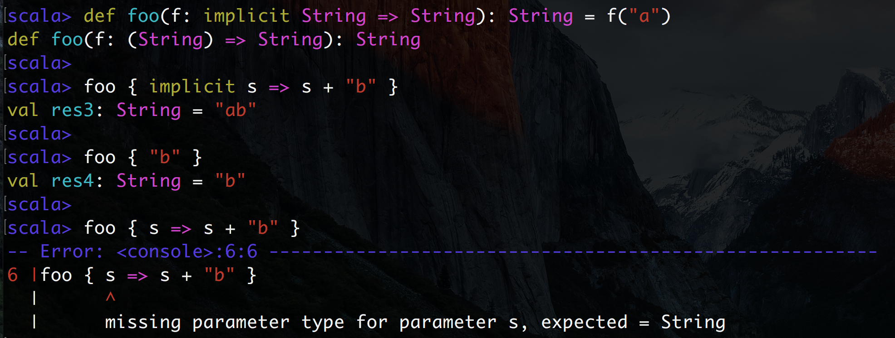implicit function
scala 2.11.xで近い事をしようとしても…
def foo(f: String => String): String = f("a")
def foo(s: String): String = s
foo { implicit s =>
s + "b"
}
foo {
"b" // スコープに引数はいない
}明示的に暗黙的にする必要あり
OKの実装
色々な使い方が考えられる…🤔
OK // 空値
OK(???) // 文字列を渡されたり…
OK(???) // JSONを渡されたり…
OK(???) // ファイル(画像など)を渡されたり…OKの実装
こんなんでどうよ
trait Response(val status: Status) {
def body: Body
def headers: Map[String, String]
}
case class OK(body: Body, headers: Map[String, String]) extends Response(Status.OK)
case object OK extends Response(Status.OK) {
...
def apply[A <: String | Array[Byte] | JSON](body: A): Response = body match {
case value: String => OK(Body.StringBody(value), headers)
case value: Array[Byte] => OK(Body.BinaryBody(value), headers)
case value: JSON => OK(Body.JSONBody(value), headers)
}
}？？？？？？
def apply[A <: String | Array[Byte] | JSON](body: A): Response = body match {
case value: String => OK(Body.StringBody(value), headers)
case value: Array[Byte] => OK(Body.BinaryBody(value), headers)
case value: JSON => OK(Body.JSONBody(value), headers)
}Union Type！
Union Type, Intersection Type
「いずれかの性質を持つ型」
「いずれの性質も持つ型」
を表せる
// String、Array[Byte]、JSONのいずれかをMixinした何か
[A <: String | Array[Byte] | JSON]
// String、IntのいずれもMixinした何か
[A <: String & Int]Union Type
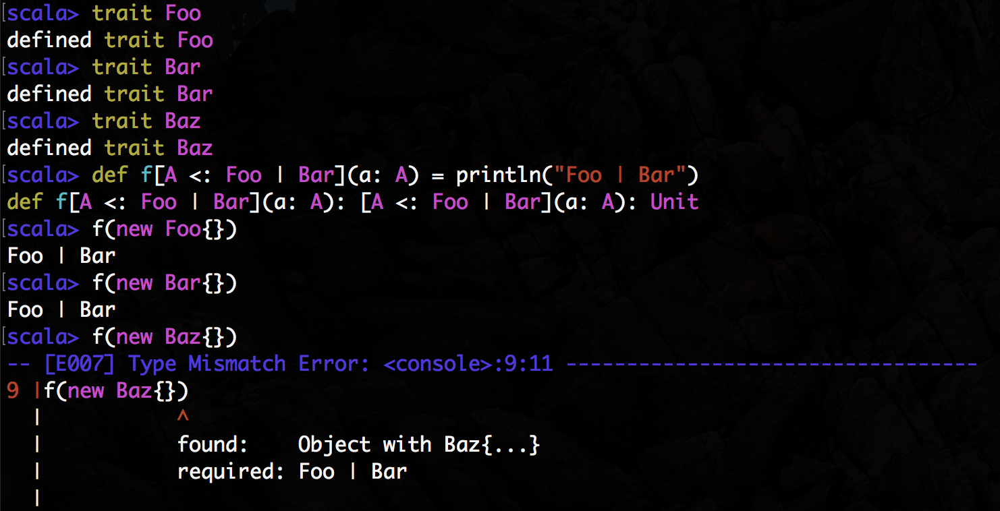
Intersection Type
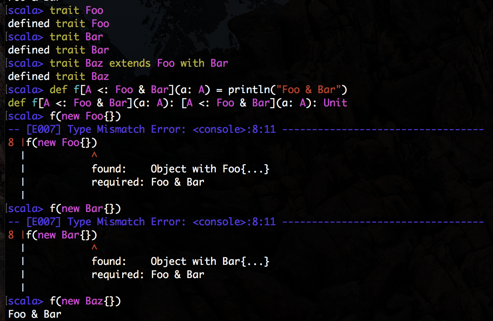
OKの実装
再び見てみましょう
trait Response(val status: Status) {
def body: Body
def headers: Map[String, String]
}
case class OK(body: Body, headers: Map[String, String]) extends Response(Status.OK)
case object OK extends Response(Status.OK) {
...
def apply[A <: String | Array[Byte] | JSON](body: A): Response = body match {
case value: String => OK(Body.StringBody(value), headers)
case value: Array[Byte] => OK(Body.BinaryBody(value), headers)
case value: JSON => OK(Body.JSONBody(value), headers)
}
}Status.OKはEnum？🤔
Enumでした
普通…？
trait Status(val enumTag: Int, val text: String) extends Enum
object Status {
...
case object OK extends Status(200, "200 OK")
...
}traitパラメータ❗
traitパラメータ
Scala 2.11.xだとabstract classにする必要あり
abstract class Status(val enumTag: Int, val text: String)
object Status {
...
case object OK extends Status(200, "200 OK")
...
}継承順を気にする必要がなくなりました 😚
ちなみにEnum構文
こういった使い方もあります。
// 起動モードのEnum
enum class Mode
object Mode {
def values: Seq[Mode] = Seq(Test, Development, Production)
def valueOf(value: String): Mode = value.toLowerCase match {
case "test" => Test
case "production" | "prod" => Production
case _ => Development
}
case Test
case Development
case Production
}詳しくは小田好先生のIssueへ
あとはアノテーション…
class UserController extends Controller {
@GET("/users")
def list() = action {
OK
}
@GET("/users/:id")
def detail(id: Long) = async {
Future.successful(OK)
}
@POST("/users")
def add() = action[JSON] {
OK("hogehoge")
}
}めんどくさそうなので、先にサーバ処理を実装💪
サーバ処理
ざっくりとこんな感じで処理
サーバ処理
エラーが出て来るケースが多い
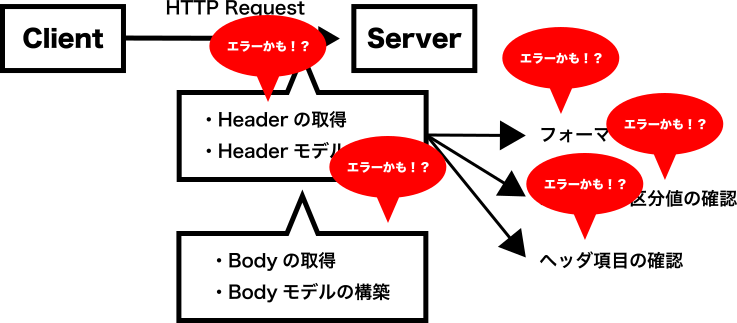エラーが出て来るケースが多い
👇
ちゃんと原因を蓄積したい
👇
(Scalaz | Cats).Validation
使おう！
▂▅▇█▓▒░(’ω’)░▒▓█▇▅▂
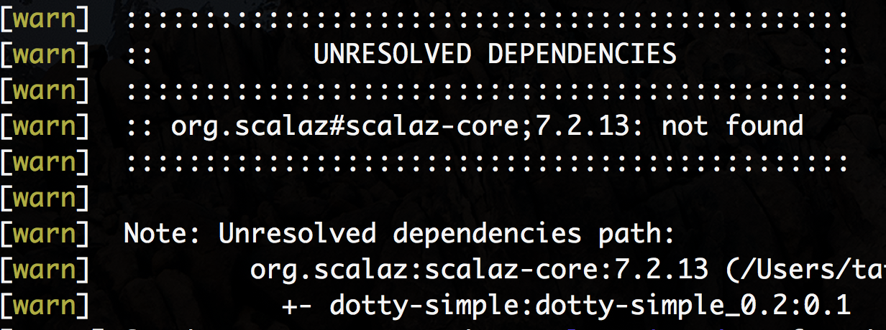 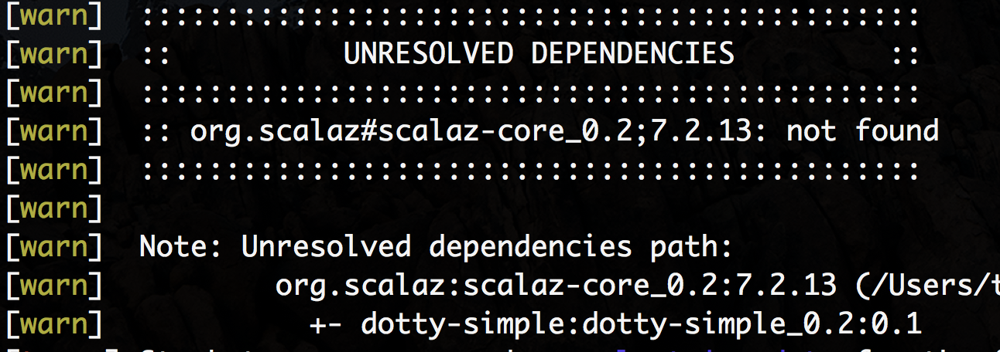依存関係が解決できない😇
sbtプラグインに答えが！！
libraryDependencies += ("org.scalaz" %% "scalaz-core" % "7.2.13").withDottyCompat()既存ライブラリを使用したい場合は"withDottyCompat"を使用する必要あり
これでDottyでもライブラリ(Scalaz)が使えるように！
だめでした
なんでだめだった？
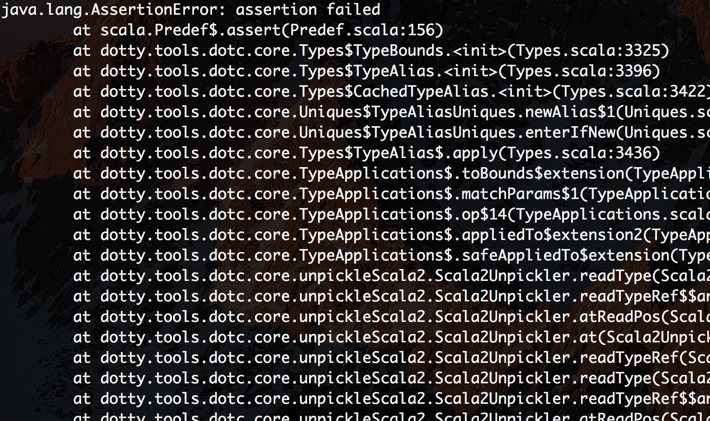
なんでだめだった？
ぜんぜんわからない
俺たちは雰囲気でDottyを
使っている
implicit classがだめっぽい
🤔
def foo() = {
import scalaz._, Scalaz._
val s1 = "OK1".success[String] // ここで怒られる
val s2 = "OK2".success[String]
s1 |@| s2
}いったん\/で対応。。。
アノテーションを使おう
アノテーションの役割(ざっくり)
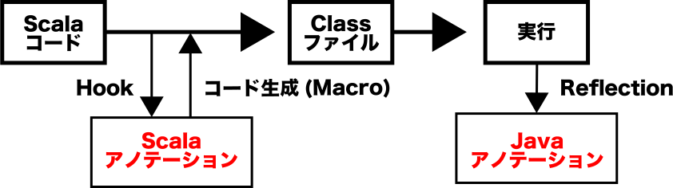class UserController extends Controller {
@GET("/users")
def list() = action {
OK
}
@GET("/users/:id")
def detail(id: Long) = async {
Future.successful(OK)
}
@POST("/users")
def add() = action[JSON] {
OK("hogehoge")
}
}指定したパスに紐付けて関数を呼び出すよう
Macroを使えれば…🤔
だめでした
なんでだめだった？
Macro廃止！😇
scala.metaを使いましょうね
👇
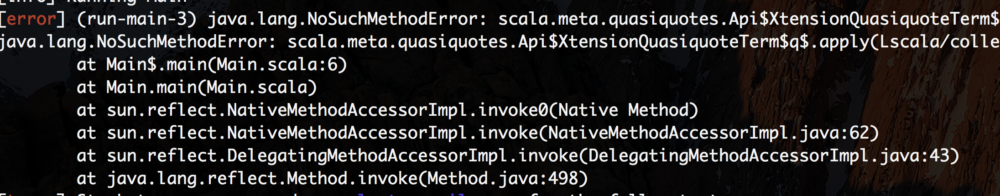NoSuchMethodによく引っかかる(未実装😇😇😇)
Javaアノテーションを使おう
import java.lang.annotation.ElementType;
import java.lang.annotation.Retention;
import java.lang.annotation.RetentionPolicy;
import java.lang.annotation.Target;
@Retention(RetentionPolicy.RUNTIME)
@Target(ElementType.METHOD)
public @interface GET {
public String path();
}Javaアノテーションを使おう
Cotntroller一覧を設定として渡す
👇
ClassLoaderで読み込み
アノテーションよりエンドポイントと処理を紐付け
👇
Routingができる！※
Java最高！
まとめ
できた
Union Type
traitパラメータ
Enum構文
他にも色々…
まとめ
うれしい
REPLがカラー
色々賢くなってる
始めやすい
まとめ
できなかった
既存ライブラリのフル活用
Macro
まとめ
うれしくない
色々なバグを踏む
未実装な所を踏む
ドキュメントが正ではない場合がある
Scala 2.12.xではない(Future.unitとかない、Either)